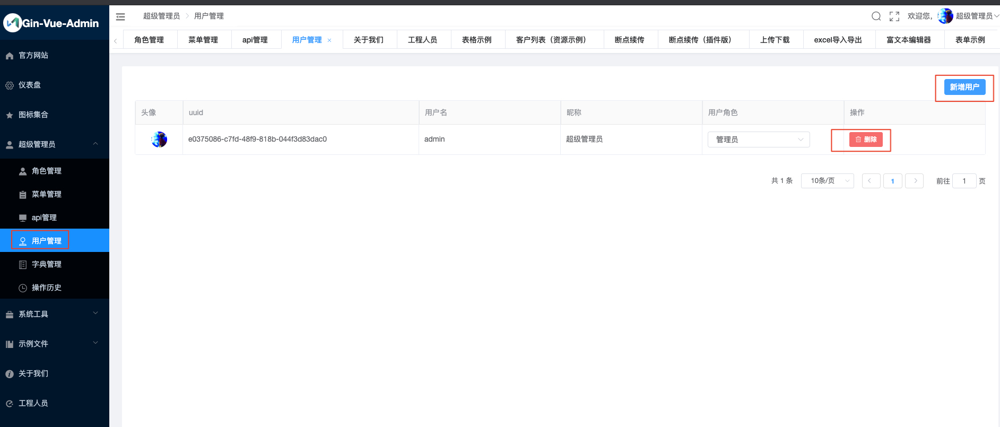

用户管理
1. 添加用户

在【用户管理】页面可以进行用户的增删改查，点击【新增用户】可以添加用户

点击【确定】后可以完成用户新增

1.1. 后台底层逻辑
注册用户时调用的是后台的
/base/register接口(POST)代码位置：
server/api/v1/sys_user.go页面实际访问的是
http://localhost:8080/api/base/register，通过前端路由，将8080端口/api前缀的请求转发至后台的 8888 端口服务添加完成的用户会入库至
sys_users表中+----+---------------------+---------------------+------------+--------------------------------------+----------+----------------------------------+-----------+-------------------------------------------------------+--------------+ | id | created_at | updated_at | deleted_at | uuid | username | password | nick_name | header_img | authority_id | +----+---------------------+---------------------+------------+--------------------------------------+----------+----------------------------------+-----------+-------------------------------------------------------+--------------+ | 3 | 2020-10-14 19:49:34 | 2020-10-14 19:49:34 | <null> | 072d9ee4-d2a0-48ee-8d0e-cd27c8a5654d | user123 | 6ad14ba9986e3615423dfca256d04e3f | 测试用户 | http://qmplusimg.henrongyi.top/1576554439myAvatar.png | 100 | +----+---------------------+---------------------+------------+--------------------------------------+----------+----------------------------------+-----------+-------------------------------------------------------+--------------+- 程序会生成一个唯一的uuid
- 后台入库前会对password做md5加密处理
- authority_id为角色权限号，详见【2. 角色权限管理】
2. 角色权限管理
在【角色管理】页面可以进行角色权限管理

点击【新增角色】可以添加角色
这里的【角色ID】为角色权限号

点击角色后面的【设置权限】按钮，可以设定角色允许访问的菜单、api和资源
注意角色需要添加以下权限，否则会影响正常登录


2.1. 后台底层逻辑
2.1.1. 新增角色
新增角色时调用的是后台的
/authority/createAuthority接口(POST)代码位置:
server/api/v1/sys_authority.go添加完成后的角色会入库至
sys_authorities表中+---------------------+---------------------+------------+--------------+----------------+-----------+ | created_at | updated_at | deleted_at | authority_id | authority_name | parent_id | +---------------------+---------------------+------------+--------------+----------------+-----------+ | 2020-10-14 19:48:03 | 2020-10-14 19:48:03 | <null> | 100 | 普通用户 | 0 | +---------------------+---------------------+------------+--------------+----------------+-----------+- 用户和角色权限之间通过authority_id来关联
2.1.2. 设置权限 —— 菜单
设置菜单权限时调用的是后台的
/authority/setDataAuthority接口(POST)代码位置:
server/api/v1/sys_authority.go设置完成后会更新
sys_authority_menus表+------------------+----------------------------+ | sys_base_menu_id | sys_authority_authority_id | +------------------+----------------------------+ | 27 | 100 | +------------------+----------------------------+sys_base_menu_id为菜单id，表示该角色允许访问的菜单
sys_authority_authority_id为角色权限号，和sys_authorities表的authority_id相关联程序会根据 基础菜单表(
sys_base_menus), 和sys_authority_menus创建一个视图：authority_menu+----+---------------------+---------------------+------------+------------+-----------+-----------+-----------+--------+------------------------------+----------+-------+------+--------------+---------+------------+--------------+ | id | created_at | updated_at | deleted_at | menu_level | parent_id | path | name | hidden | component | title | icon | sort | authority_id | menu_id | keep_alive | default_menu | +----+---------------------+---------------------+------------+------------+-----------+-----------+-----------+--------+------------------------------+----------+-------+------+--------------+---------+------------+--------------+ | 27 | 2020-10-12 22:11:03 | 2020-10-12 22:11:03 | <null> | 0 | 0 | project_a | project_a | 0 | view/project_a/project_a.vue | 工程人员 | eleme | 10 | 100 | 27 | 0 | 0 | +----+---------------------+---------------------+------------+------------+-----------+-----------+-----------+--------+------------------------------+----------+-------+------+--------------+---------+------------+--------------+
2.1.3. 设置权限 —— api
设置api权限时调用的是后台的
/casbin/updateCasbin接口(POST)代码位置：
server/api/v1/sys_casbin.go设置完成后会更新
casbin_rule表+--------+-----+-------------------------------+--------+----+----+----+ | p_type | v0 | v1 | v2 | v3 | v4 | v5 | +--------+-----+-------------------------------+--------+----+----+----+ | p | 100 | /projectA/createProjectA | POST | | | | | p | 100 | /projectA/deleteProjectA | DELETE | | | | | p | 100 | /projectA/deleteProjectAByIds | DELETE | | | | | p | 100 | /projectA/updateProjectA | PUT | | | | | p | 100 | /projectA/findProjectA | GET | | | | | p | 100 | /projectA/getProjectAList | GET | | | | +--------+-----+-------------------------------+--------+----+----+----+- 内容为
authority_id= 100 允许访问的接口
- 内容为